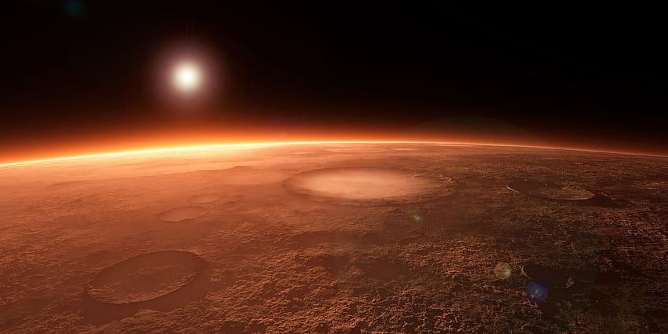

Pioneer
Sojourner

The first successful Mars rover that proved robotic exploration was possible.
- Launch
- 1996
- Landing
- 1997
- Duration
- 87 days (exceeded 30-day plan)
Exploring the Red Planet
NASA's Mars rovers are robotic explorers designed to study the Red Planet's rocks, soil, atmosphere, and past habitability. From early missions like Spirit and Opportunity to the cutting-edge Curiosity and Perseverance rovers, each robot carries unique instruments that help scientists answer big questions about Mars and our solar system.
This site is aimed at space, science, and exploration enthusiasts — including students and educators who want a clear, accessible overview of these remarkable missions.
Visit NASA's Official Mars Exploration Site
Meet the four generations of rovers that have explored Mars, from Sojourner's groundbreaking first steps to Perseverance's cutting-edge sample collection.
The first successful Mars rover that proved robotic exploration was possible.
A mobile science lab searching for signs that Mars could have supported life.

Collecting rock samples and searching for evidence of ancient microbial life.

Twin rovers that dramatically exceeded their 90-sol mission plans, reshaping our understanding of Mars.
Short news and messages from mission teams, curated for students and enthusiasts. These sample updates demonstrate how the page will display ongoing mission activity.
Perseverance successfully collected and cached several rock core samples in Jezero Crater. Scientists are analyzing imaging data to prioritize sample return candidates.
The Ingenuity helicopter performed a series of short-range scouting flights to survey an area of interest, providing high-resolution images that guided rover route planning.
Curiosity continues to operate as a mobile laboratory, returning vital chemistry and environmental readings that help build Mars' long-term climate record.
Rovers analyze rock layers, minerals, and chemical signatures to determine whether Mars once had liquid water, a thicker atmosphere, and conditions that could have supported life.
Weather sensors, cameras, and radiation detectors help scientists study dust storms, surface temperatures, winds, and radiation levels that future human explorers will face.
Technologies tested by the rovers — such as landing systems, autonomous navigation, and in-situ resource utilization — inform future missions that may send astronauts to Mars.
The history of Mars rovers began with small, experimental landers and evolved into sophisticated mobile laboratories. Early missions tested basic landing technologies and returned the first close-up imagery of the Martian surface. Over time, rovers grew larger and more capable: the twin Mars Exploration Rovers, Spirit and Opportunity, arrived in 2004 and dramatically outlived their planned 90-sol missions, returning rich geological evidence of ancient water activity.
Later, the larger Curiosity rover (landed 2012) carried an extensive suite of instruments to analyze rock chemistry and evaluate past habitability. In 2021, Perseverance touched down with ambitions to collect and cache samples for eventual return to Earth, and it carried the Ingenuity helicopter, demonstrating powered flight on another planet.
Throughout these missions, engineers and scientists refined landing, mobility, and autonomy technologies, enabling longer traverses, faster decision-making, and higher-value science. The mission-history page contains timelines and detailed milestones for each rover if you want to dig deeper.
Future exploration will build on these successes: sample return campaigns, advanced surface platforms, and preparations for eventual human exploration of Mars.